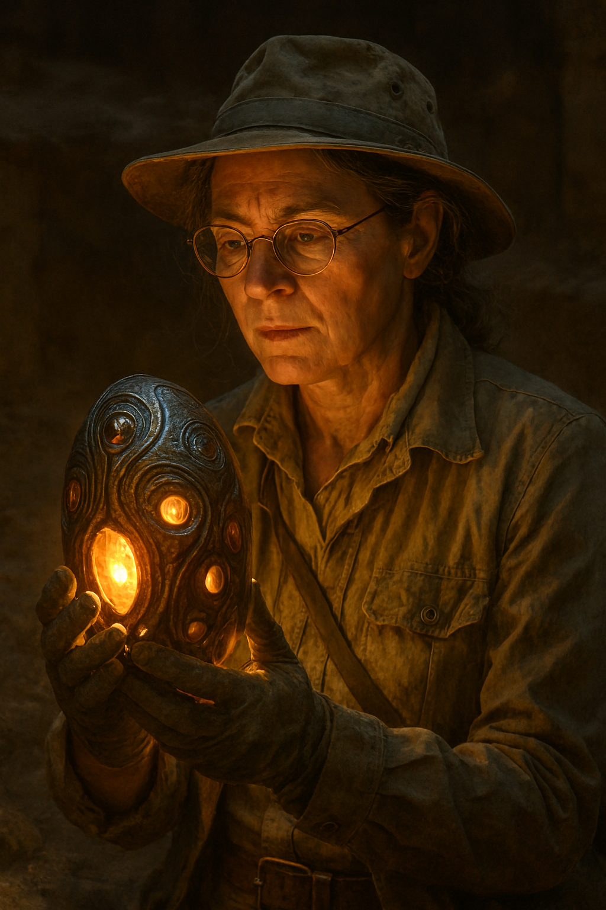
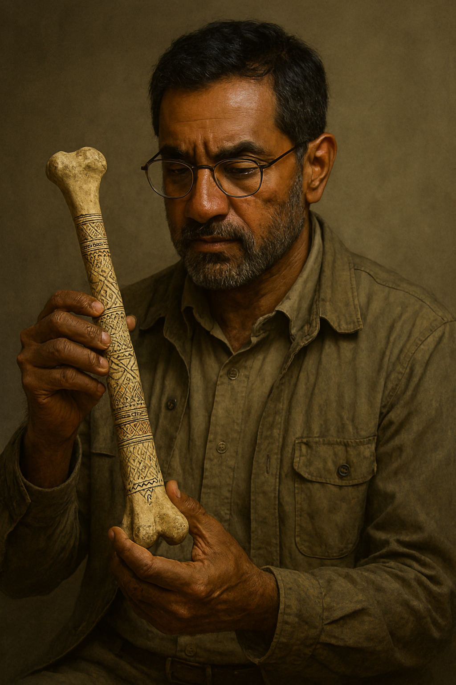
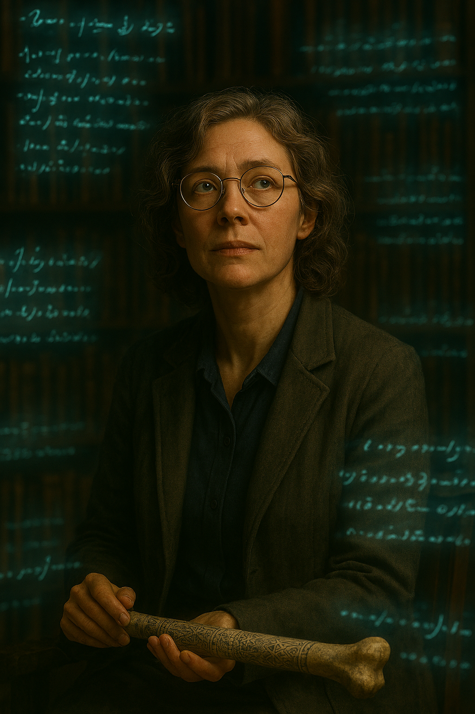

Dr. Isla Raman
Archaeologist – Interstellar Lithic Cultures
Dr. Isla Raman holds a dual PhD in Archaeology and Exo-Anthropology from the University of New New Delhi. A pioneer in deep-space excavation, she specializes in pre-human artifact analysis and is known for her rediscovery of the Floating Keys of Sargosa V. Her field toolkit includes subatomic chisels, orbital drones, and LIDAR-shifting goggles.
At The Echoes Archive, she leads the “Forgotten Futures” exhibit, curating tactile experiences from reconstructed relics. With her calm precision and fearless curiosity, Dr. Raman ensures the museum remains at the frontier of artifact discovery.
Special Traits: She is a neurodivergent thinker who processes visual data at accelerated speeds, earning her the nickname “Eagle Eye Isla.”

Dr. Raj Malik
Anthropologist – Linguistic Fossils & Skeletal Semiotics
Dr. Malik received his doctorate in Physical Anthropology from the University of Cape Town, focusing on evolutionary linguistics and funerary etchings. His breakthrough study on skeletal tattoo patterns in the Skyborn Ribcage brought forward the lost language of astral cartographers.
In the Archive, he is a key voice in ethical excavation and the stewardship of cultural remains. His approach mixes empathy, bone microfracture analysis, and 3D reconstructions using soft-tissue AI modeling.
Special Traits: As a multilingual ethnographer raised in six countries, he brings a global perspective and advocates for transnational research collaboration.

Prof. Lyra Moss
Cultural Historian – Story Architect & Ritual Semiotician
With advanced degrees in Comparative Mythography and Virtual Humanities, Lyra Moss blends narrative reconstruction with symbolic analysis. She’s the creator of the “Storyseed Protocol,” which uses simulations to hypothesize rituals based on fragmented artifacts.
At the Echoes Archive, Prof. Moss translates fragmented truth into public interpretation. Her preferred method weaves indigenous epistemology with nonlinear storytelling and speculative ethnography. She's known for collaborating with artists, elders, and philosophers to build narrative bridges between the living and the long gone.
Special Traits: She is an advocate for repatriation and challenges colonial museum frameworks. She identifies as a “dream-thinker” who believes stories can heal fractured histories.